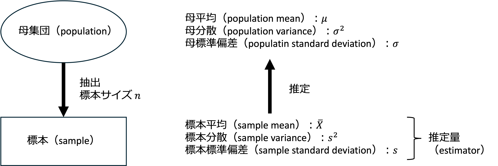
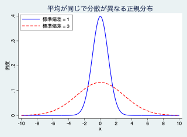
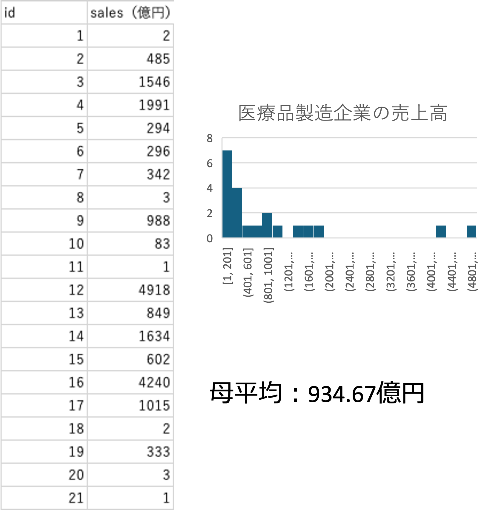
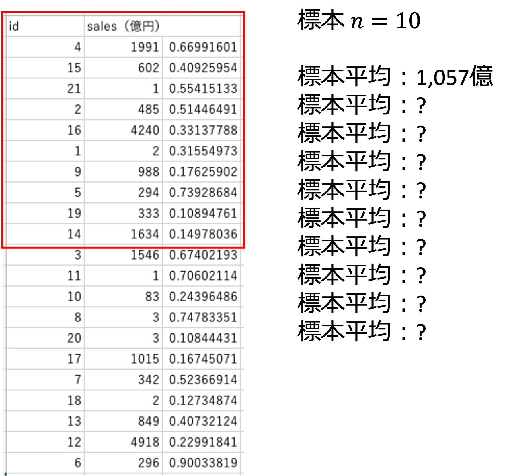
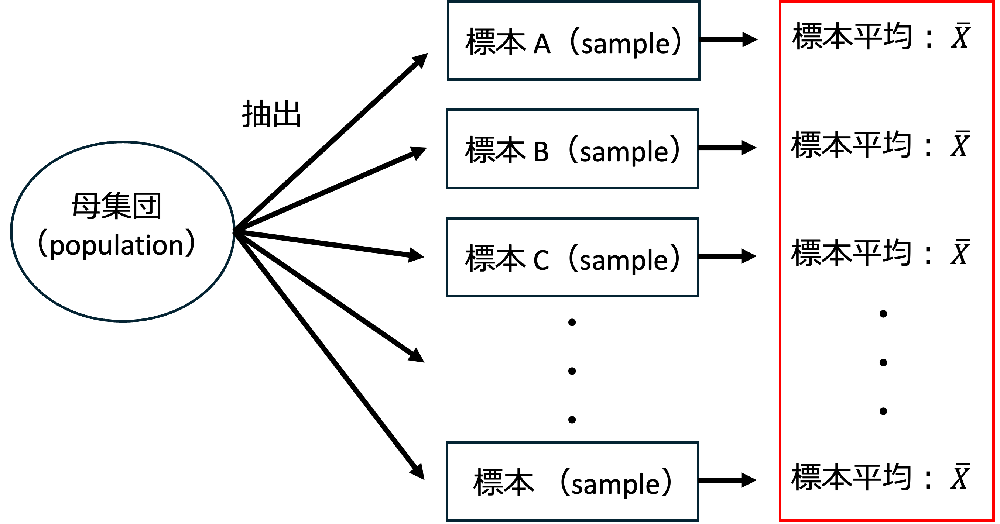
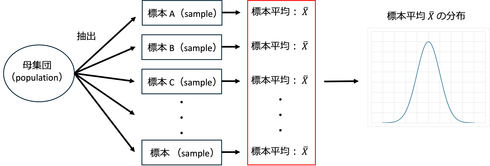

15 母集団の推定
- 母集団と標本、推定の考え方
- 母集団と標本、母集団の推定、標本平均、標本平均の分布、標準誤差
15.1 データの分類
分析に使用するデータは、その収集方法によって大きく3つに分類されます。
- 業務統計
日々の売り上げや仕入れなど、日常業務で自然に蓄積されるデータ。 - ビッグデータ
業務統計などが膨大に蓄積されたもの。 - 調査統計
特定の目的のためにアンケートなどで集めたデータ。
これには「全数調査」と「標本調査」があります。
15.2 母集団と標本
15.2.1 母集団 (Population)
調査対象となる集合全体のことです。
- 有限母集団
人口や世帯数など、規模が明らかなもの。 - 無限母集団
コイン投げを無限に繰り返す場合など、規模が不明なもの。 - 全数調査（悉皆調査、センサス：census）
母集団のすべてを調べること
例：国勢調査（1920年から5年に一度実施）
15.2.2 標本 (Sample)
母集団の中から抽出された一部のデータのことです。
- 調査対象である母集団の一部を調査 → 標本調査（sample survey）
- 実際に調査される母集団の一部 → 標本（sample）
- 標本に含まれる観測値数を \(n\) で表し、標本サイズ（sample size）と呼びます。
- 標本に含まれる観測値は \(x_i \ (i = 1, 2, \cdots, n)\) や、\(\{x_i\}_{i=1}^{n}\) などで表します。
15.3 標本抽出（サンプリング）
- 無作為抽出（random sampling）
- 母集団の特徴を有しているように抽出する
- 単純無作為抽出（simple random sampling）
- 母集団のリストから均等の確率で抽出する
- 系統抽出（systematic sampling）
- 一番目の要素を無作為に抽出し、そこから一定の間隔（\(N/n\)）で抽出する
- 母集団のリストの並び順に留意が必要
（無作為に並んでいるのか、または何らかの順番で並んでいるか）
- 層別抽出（stratified sampling）
- 母集団を階層（年齢・性別・居住地など）に分け、母集団に含まれている割合を考慮して各層の中から一定の割合を無作為に抽出する
- 層化多段抽出法（例：都市規模で層化し、市区町村 → 地点 → 個人の順に抽出）
15.4 推定の考え方
標本から得られた「推定量（標本平均など）」を用いて、未知の「母集団の特徴（母平均など）」を推測します。

15.5 標本平均
- 母集団から取り出した大きさ \(n\) の標本を「\(X_1, X_2, X_3, \cdots, X_n\)」とすると、標本平均は以下のように表されます。
\[ \bar{X} = \frac{1}{n}(X_1 + X_2 + X_3 + \cdots + X_n) = \frac{1}{n}\sum_{i=1}^{n} X_i \]
15.6 標本分散
- 母集団から取り出した大きさ \(n\) の標本を「\(X_1, X_2, X_3, \cdots, X_n\)」とすると、標本分散は以下のように表されます。\(n-1\)で割る理由は以下参照。
\[ s_x^2 = \frac{1}{\color{#E36C09}{n-1}}\left\{(X_1 - \bar{X})^2 + (X_2 - \bar{X})^2 + \cdots + (X_n - \bar{X})^2\right\} \]
- ちなみに、母分散はこれまで通り以下のように表されます。 \[ \sigma_x^2 = \frac{1}{\color{#E36C09}{n}}\left\{(X_1 - \mu)^2 + (X_2 - \mu)^2 + \cdots + (X_n - \mu)^2\right\} \]
15.6.1 そもそも分散とは？（復習）
分布が平均に集中している程度を表す指標
分布の平均への集中度を計算するには、各観測値（\(X_1, X_2, \cdots, X_n\)）が、平均からどれだけ離れているか（偏差：平均との差）を計算し、この平均を比較すれば良いように思われます。しかし、これを計算すると以下のように 0 になってしまいます。
\[ \begin{aligned} &\frac{1}{n}\left\{(X_1 - \bar{X}) + (X_2 - \bar{X}) + \cdots + (X_n - \bar{X})\right\} \\ &= \frac{1}{n}\left\{(X_1 + X_2 + \cdots + X_n) - n\bar{X}\right\} \\ &= \frac{X_1 + X_2 + \cdots + X_n}{n} - \bar{X} \\ &= 0 \end{aligned} \]
だから合計する前に2乗し、0 にならないようにしたのが分散です。
分散の単位は元の単位の2乗なので、値の大きさの意味が分かり難いです。例えば、元の単位が「円」だとすると、分散の単位は円\(^2\)となり、解釈が難しくなります。そこで、分散の平方根 \(\sqrt{\phantom{x}}\) を取った標準偏差を求めることが多いです。

15.6.2 分散を求める際に \(n-1\) で割る理由（イメージ）
- 標本分散を求める際、母平均 \(\mu\) は未知なので標本平均を使う必要があります。
- つまり、標本分散の計算前には、標本平均値が分かっている必要があります。
- さらに、標本平均値を求めるには、標本合計が分かっている必要があります。
- したがって、標本分散を求める時点では、\(x_1, \cdots, x_n\) のうち、一つの値は既に決まっていて、実質的なデータの数は \(n-1\) 個なので、推測統計の際（標本から母集団を推測する際）には、実質的なデータの数 \(n-1\) で割ります。
- この \(n-1\) を分散の自由度（degree of freedom）といいます。
- 例えば、a, b, c, d, e, f という6つのデータ（数字）と、それらの合計 s が分かっていたとすると、6つ目のデータ f は、s − (a+b+c+d+e) と表され、自由な値を取れない（独立していない）データとなり、母集団を推測する際に役に立たないと考えられるからです。
15.7 標本調査の例
日本の医療品製造企業21社（母集団）の2016年の売上高から標本（\(n=10\)）を抽出し標本平均を求めます。

（本来であれば、全ての会社の売上高や母平均を調査できないため標本調査を行うわけですが、今回は説明のため最初から全てわかる状態にしています。）
この21社から無作為に10社を抽出します。
エクセルで「=RAND()」と入力し、大きい/小さい順に並び替えます。

上記のように、標本の取り方によりいくつもの標本平均が作られます。
（つまり、標本平均そのものも分布します。）
15.8 標本統計量の分布
標本抽出と平均の推定を複数回行う場合を考えます。標本平均は一つの値ではなく、抽出された標本ごとに標本平均が存在します。

そして、この標本平均自体も分布します。

15.9 標本平均の分布
標本平均の期待値（期待される平均的な数値）は、以下の計算の通り、\(\mu\) （母平均）に一致します。
\[ \begin{aligned} E(\bar{X}) &= E\left(\frac{X_1 + X_2 + \cdots + X_n}{n}\right) \\ &= \frac{1}{n}\left\{E(X_1) + E(X_2) + \cdots + E(X_n)\right\} \\ &= \frac{1}{n}n\mu \\ &= \color{#E36C09}{\mu} \end{aligned} \]
標本平均の分散は、母分散 \(\sigma^2\) を \(n\) で割ったものになります。母分散 \(\sigma^2\) が未知の場合は、標本分散 \(s^2\) を \(n\) で割ったもので置き換えます。
\[ \begin{aligned} V(\bar{X}) &= V\left(\frac{1}{n}(X_1 + X_2 + \cdots + X_n)\right) \\ &= \frac{1}{n^2}\left\{V(X_1) + V(X_2) + \cdots + V(X_n)\right\} \\ &= \frac{1}{n^2}n\sigma^2 \\ &= \color{#E36C09}{\frac{\sigma^2}{n}} \ \text{または} \ \color{#E36C09}{\frac{s^2}{n}} \end{aligned} \]
標本平均の標準偏差は、\(\color{#E36C09}{\dfrac{\sigma}{\sqrt{n}}}\) または \(\color{#E36C09}{\dfrac{s}{\sqrt{n}}}\) で置き換えたものです。
つまり、標本平均の分布は、平均 \(\mu\)、分散 \(\dfrac{\sigma^2}{n}\) の正規分布 \(N\left(\mu, \dfrac{\sigma^2}{n}\right)\) に近づきます。
母分散 \(\sigma^2\) が未知の場合、標本分散 \(\color{#E36C09}{\dfrac{s^2}{n}}\) で置き換え標準化すると、正規分布ではなく、（母集団が正規分布の場合）自由度 \(n-1\) の \(t\) 分布に従います。
15.10 標本（普遍）分散の分布
標本（不偏）分散（\(n-1\) で割ったもの・小文字の \(s\) で表す）は、\(E(s^2) = \color{#E36C09}{\sigma^2}\)
標本分散（\(n\) で割ったもの・大文字の \(S\) で表す）は、\(E(S^2) = \color{#E36C09}{\dfrac{n-1}{n}}\,\sigma^2\)（\(n = 10\) 程度ならば1割程度の過小評価となる）
15.11 標準誤差
- 標本の統計量は、抽出された標本ごとに存在すると考えられるので、標本の統計量には、ばらつきがあると考えられます。
- そして、推定の誤差が大きいほど、標準偏差が大きくなることも予想できます。
- そこで、このばらつき（標本の統計量の標準偏差）を推定量の誤差を示すと考えて、標準誤差と呼びます。
- 標準誤差は、標本統計量が母集団の真の値からどれだけばらつくかを示しており、小さいほどばらつきが小さく、推定の精度が高いことを意味します。
15.12 データ分析ツール
- Excelのデータ分析ツールを使うと、標準誤差を含む他統計量が一度に出力されます。
- 「分析ツール」が表示されていない場合は以下の操作でリボンに表示させます。（大学のパソコンはシャットダウンの度に初期化されるので毎回この操作を行う必要があります。
ファイル→その他→オプション→アドイン→分析ツール→設定→OK